2.ROHIT SHARMA

Full Name: Rohit Gurunath Sharma
Date of Birth: 30 April 1987
Birthplace: Nagpur, Maharashtra, India
Nationality: Indian
Profession: International Cricketer
Role: Opening Batsman
Batting Style: Right-handed
Nickname: Hitman
Website Created by: MAHIR CHAVDA AND TEAM
" THEY ARE NOT IN ANY PARTICULAR ORDER, THEY ARE ALL GREAT PLAYERS."
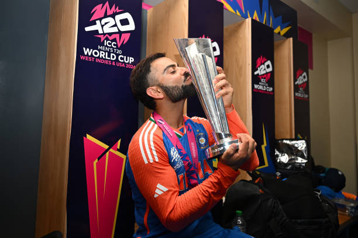
Full Name: Virat Kohli
Date of Birth: 5 November 1988
Birthplace: Delhi, India
Nationality: Indian
Profession: International Cricketer
Role: Top-order Batsman
Batting Style: Right-handed
Nickname: King Kohli
Virat Kohli is one of the greatest batsmen in modern cricket.
He is known for his aggressive playing style and strong determination.
Kohli has scored centuries in all formats of international cricket.
He has captained the Indian cricket team with passion and confidence.
His fitness and discipline make him a role model for young athletes.
Virat Kohli is admired worldwide for his consistency and match-winning performances.
He continues to inspire millions of cricket fans around the globe.
Virat Kohli is India’s most successful Test captain , he played 68 test as a captain and won 40 of them and 11 draws
Full Name: Rohit Gurunath Sharma
Date of Birth: 30 April 1987
Birthplace: Nagpur, Maharashtra, India
Nationality: Indian
Profession: International Cricketer
Role: Opening Batsman
Batting Style: Right-handed
Nickname: Hitman
Rohit Sharma is one of the most talented opening batsmen in world cricket.
He is known for his calm nature and elegant batting style
Rohit holds the record for the highest individual score in ODIs (264 runs).
He has scored multiple double centuries in One Day Internationals.
His timing and shot selection make batting look effortless.
Rohit Sharma is admired by millions of cricket fans around the world.
As a captain, he leads the Indian cricket team with confidence and composure.
he lead india to the 2023 ODI WORLD CUP FINAL without lossing a single match
As a captain he won T20 WORLD CUP IN 2024 and CHAMPIONS TROPHY IN 2025
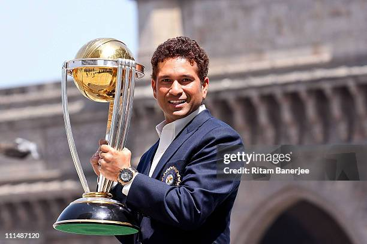
Full Name: Sachin Ramesh Tendulkar
Date of Birth: 24 April 1973
Birthplace: Mumbai, Maharashtra, India
Nationality: Indian
Profession: Former International Cricketer
Role: Top-order Batsman
Batting Style: Right-handed
Nickname: GOD OF CRICKET
Sachin Tendulkar is one of the greatest batsmen in the history of world cricket.
He is known for his dedication, discipline, and technically perfect batting style.
Sachin holds the record for scoring 100 international centuries, a milestone unmatched in cricket.
He became the first cricketer to score a double century in One Day Internationals (200*).
He represented India for 24 years and carried the hopes of the nation with pride and consistency.
His straight drive is considered one of the most beautiful shots in cricket history.
Sachin Tendulkar is admired and respected by millions of cricket fans around the world and is often called the "God of Cricket."
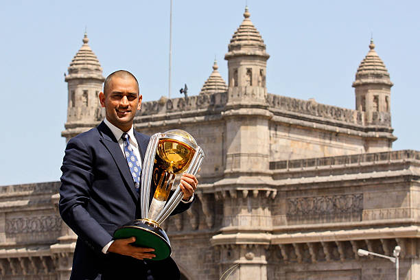
Full Name: Mahendra Singh Dhoni
Date of Birth: 7 July 1981
Birthplace: Ranchi, Jharkhand, India
Nationality: Indian
Profession: Former International Cricketer
Role: Wicket-keeper Batsman
Batting Style: Right-handed
Nickname: Mahi, Captain Cool
MS Dhoni is one of the greatest captains in the history of world cricket.
He is known for his calm nature, sharp cricketing mind, and exceptional leadership skills.
Dhoni is the only captain to win all three major ICC trophies — the T20 World Cup (2007), the ODI World Cup (2011), and the Champions Trophy (2013).Dhoni is the only captain to win all three major ICC trophies — the T20 World Cup (2007), the ODI World Cup (2011), and the Champions Trophy (2013).
He played one of the most iconic innings in cricket history by scoring 91* in the 2011 World Cup final and finishing the match with a memorable six.
He represented India with pride and led the team to numerous historic victories across all formats.
His helicopter shot is considered one of the most powerful and unique shots in cricket.
MS Dhoni is admired and respected by millions of cricket fans around the world and is fondly known as "Captain Cool."
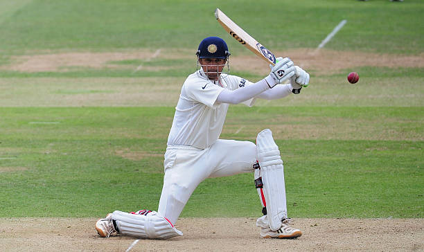
Full Name: Rahul Sharad Dravid
Date of Birth: 11 January 1973
Birthplace: Indore, Madhya Pradesh, India
Nationality: Indian
Profession: Former International Cricketer, Cricket Coach
Role: Top-order Batsman
Batting Style: Right-handed
Nickname: The Wall
Rahul Dravid is one of the greatest batsmen in the history of Indian cricket.
He is known for his solid technique, patience, and strong defensive skills at the crease.
Dravid earned the nickname "The Wall" for his ability to stand firm against the toughest bowling attacks in world cricket.
He scored over 13,000 runs in both Test and One Day International cricket, making him one of the highest run-scorers for India.
He played a key role in many historic victories for India, especially in overseas Test matches.
His calm temperament and dedication to the game made him one of the most respected cricketers in the world.
Rahul Dravid is admired by cricket fans for his humility, discipline, and immense contribution to Indian cricket.
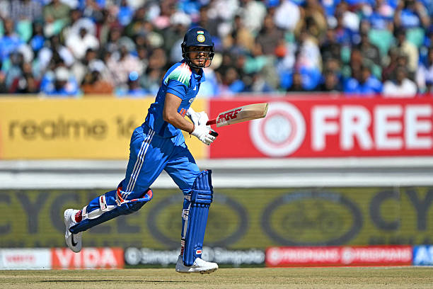
Full Name: Shubman Gill
Date of Birth: 8 September 1999
Birthplace: Punjab, India
Nationality: Indian
Role: Opening Batsman
Batting Style: Right-handed
Nickname: Prince of Indian Cricket
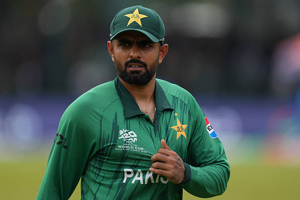
Full Name: Babar Azam
Date of Birth: 15 October 1994
Birthplace: Lahore, Pakistan
Nationality: Pakistani
Role: Top-order Batsman
Batting Style: Right-handed
Nickname: King Babar
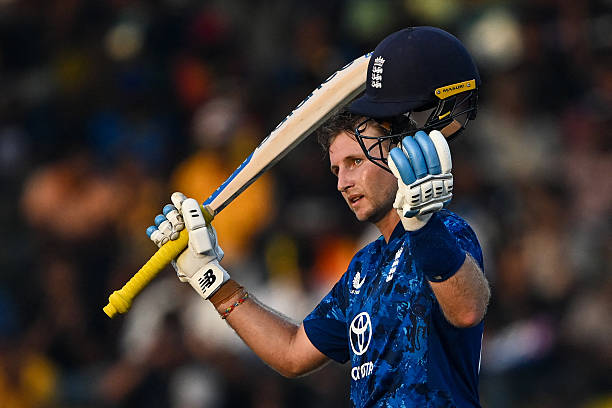
Full Name: Joe Root
Date of Birth: 30 December 1990
Birthplace: England
Nationality: English
Role: Batsman
Batting Style: Right-handed
Nickname: Rooty
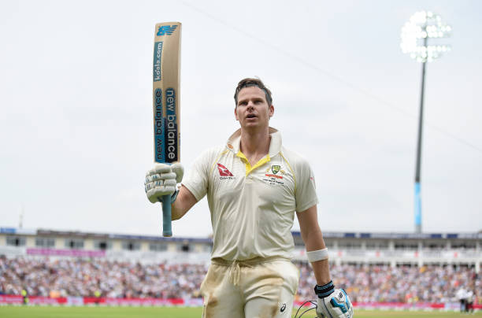
Full Name: Steve Smith
Date of Birth: 2 June 1989
Birthplace: Australia
Nationality: Australian
Role: Batsman
Batting Style: Right-handed
Nickname: Smudge
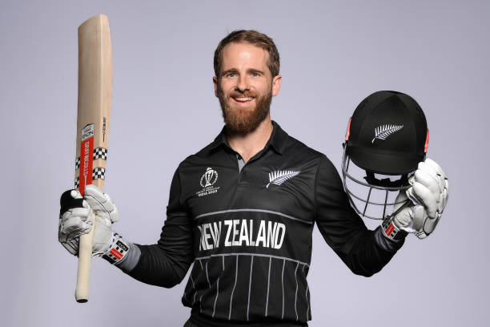
Full Name: Kane Williamson
Date of Birth: 8 August 1990
Birthplace: New Zealand
Nationality: New Zealander
Role: Batsman
Batting Style: Right-handed
Nickname: Kane Mama
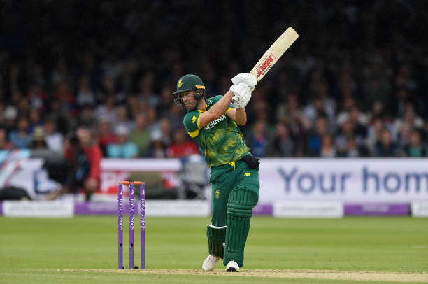
Full Name: AB de Villiers
Date of Birth: 17 February 1984
Birthplace: South Africa
Nationality: South African
Role: Batsman
Batting Style: Right-handed
Nickname: Mr. 360
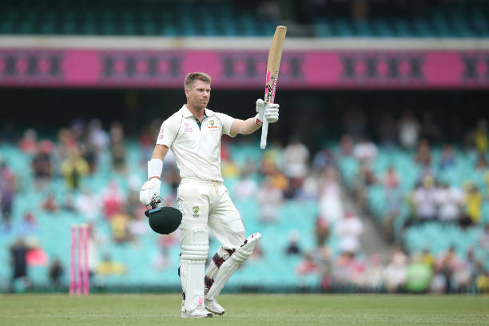
Full Name: David Warner
Date of Birth: 27 October 1986
Birthplace: Australia
Nationality: Australian
Role: Opening Batsman
Batting Style: Left-handed
Nickname: Bull
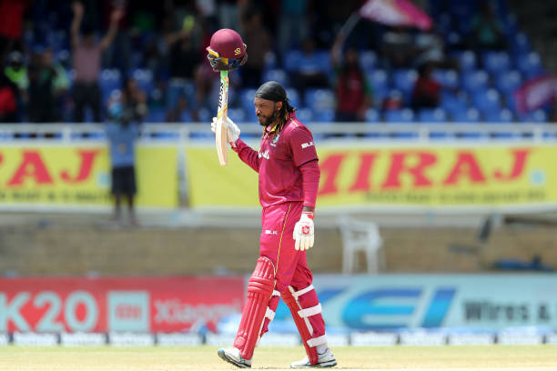
Full Name: Chris Gayle
Date of Birth: 21 September 1979
Birthplace: Jamaica
Nationality: West Indian
Role: Opening Batsman
Batting Style: Left-handed
Nickname: Universe Boss
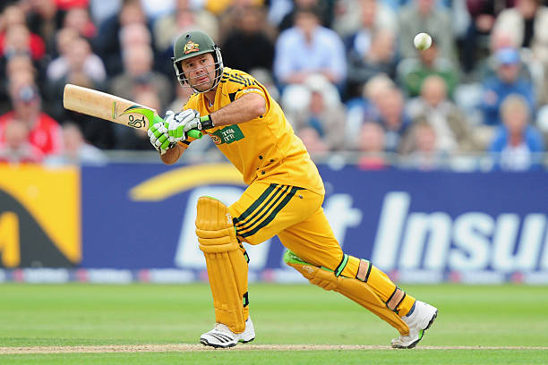
Full Name: Ricky Ponting
Date of Birth: 19 December 1974
Birthplace: Australia
Nationality: Australian
Role: Batsman
Batting Style: Right-handed
Nickname: Punter
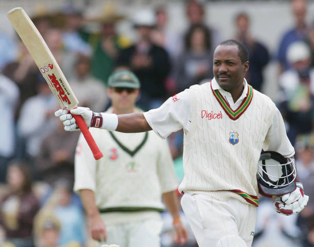
Full Name: Brian Lara
Date of Birth: 2 May 1969
Birthplace: Trinidad
Nationality: West Indian
Role: Batsman
Batting Style: Left-handed
Nickname: Prince of Trinidad
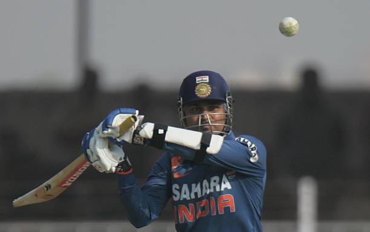
Full Name: Virender Sehwag
Date of Birth: 20 October 1978
Birthplace: Delhi, India
Nationality: Indian
Role: Opening Batsman
Batting Style: Right-handed
Nickname: Nawab of Najafgarh
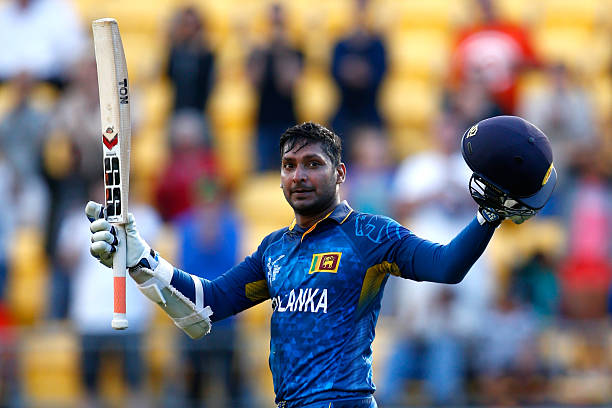
Full Name: Kumar Chokshanada Sangakkara
Date of Birth: 27 October 1977
Birthplace: Matale, Sri Lanka
Nationality: Sri Lankan
Role: Batsman
Batting Style: Left-handed
Nickname: Sanga
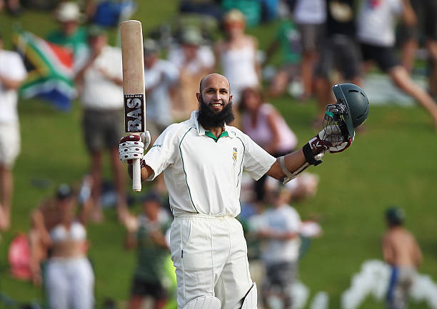
Full Name: Hashim Mohammed Amla
Date of Birth: 31 March 1983
Birthplace: Durban, South Africa
Nationality: South African
Role: Batsman
Batting Style: Right-handed
Nickname: Amla
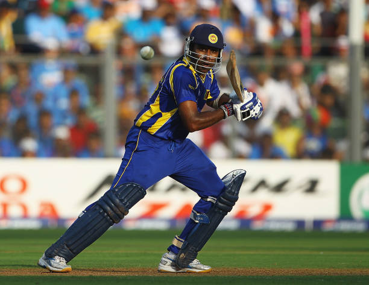
Full Name: Denagamage Proboth Mahela de Silva Jayawardene
Date of Birth: 27 May 1977
Birthplace: Colombo, Sri Lanka
Nationality: Sri Lankan
Role: Batsman
Batting Style: Right-handed
Nickname: Mahela
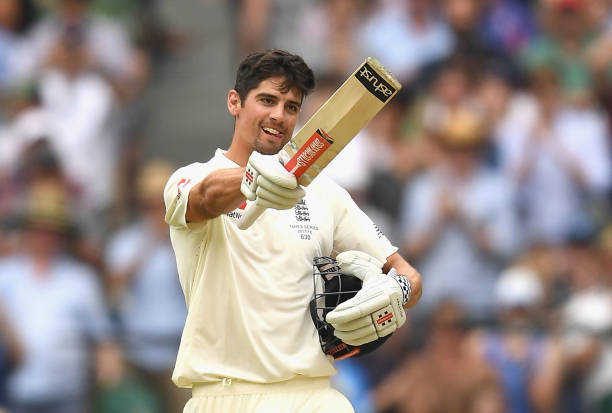
Full Name: Sir Alastair Nathan Cook
Date of Birth: 25 December 1984
Birthplace: Gloucester, England
Nationality: English
Role: Batsman
Batting Style: Left-handed
Nickname: Cook
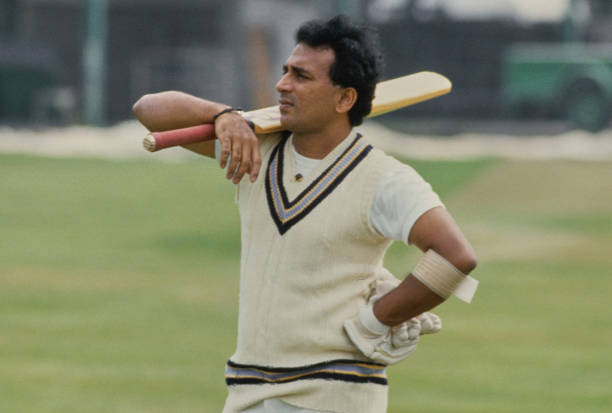
Full Name: Sunil Manohar Gavaskar
Date of Birth: 10 July 1949
Birthplace: Mumbai, India
Nationality: Indian
Role: Batsman
Batting Style: Right-handed
Nickname: Sunny
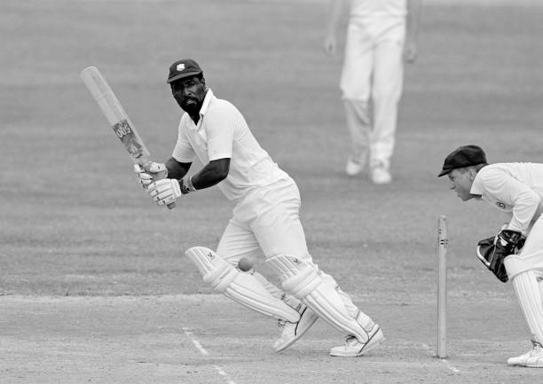
Full Name: Sir Isaac Vivian Alexander Richards
Date of Birth: 7 March 1952
Birthplace: St. John's, Antigua
Nationality: West Indian
Role: Batsman
Batting Style: Right-handed
Nickname: Viv
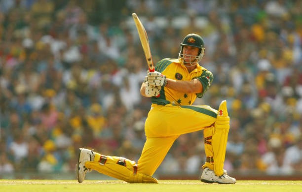
Full Name: Matthew Lawrence Hayden
Date of Birth: 29 October 1971
Birthplace: Kingaroy, Australia
Nationality: Australian
Role: Batsman
Batting Style: Left-handed
Nickname: Haydos
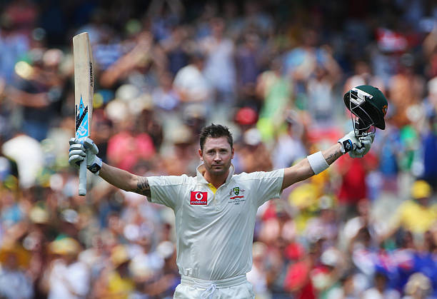
Full Name: Michael John Clarke
Date of Birth: 2 April 1981
Birthplace: Liverpool, Australia
Nationality: Australian
Role: Batsman
Batting Style: Right-handed
Nickname: Pup
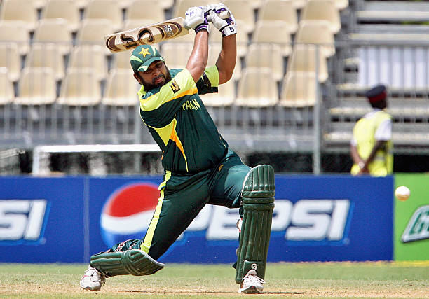
Full Name: Inzamam-ul-Haq
Date of Birth: 3 March 1970
Birthplace: Multan, Pakistan
Nationality: Pakistani
Role: Batsman
Batting Style: Right-handed
Nickname: Inzi
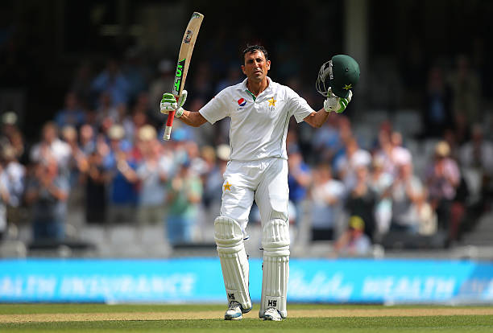
Full Name: Younis Khan
Date of Birth: 29 November 1977
Birthplace: Mardan, Pakistan
Nationality: Pakistani
Role: Batsman
Batting Style: Right-handed
Nickname: Younis
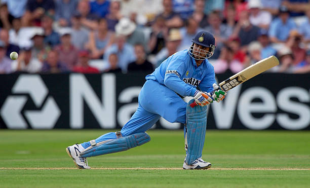
Full Name: Sourav Chandidas Ganguly
Date of Birth: 8 July 1972
Birthplace: Kolkata, India
Nationality: Indian
Role: Batsman
Batting Style: Left-handed
Nickname: Dada
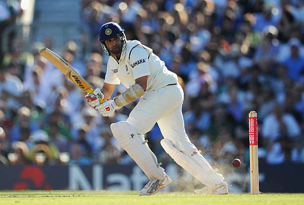
Full Name: Vangipurapu Venkata Sai Laxman
Date of Birth: 1 November 1974
Birthplace: Hyderabad, India
Nationality: Indian
Role: Batsman
Batting Style: Right-handed
Nickname: Laxman
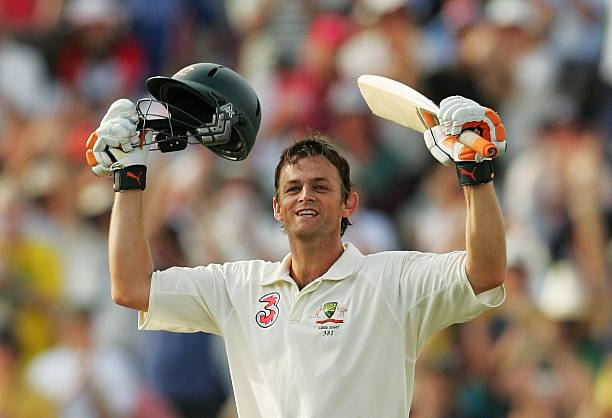
Full Name: Adam Craig Gilchrist
Date of Birth: 14 November 1971
Birthplace: Bellingen, Australia
Nationality: Australian
Role: Wicketkeeper-Batsman
Batting Style: Left-handed
Nickname: Gilly
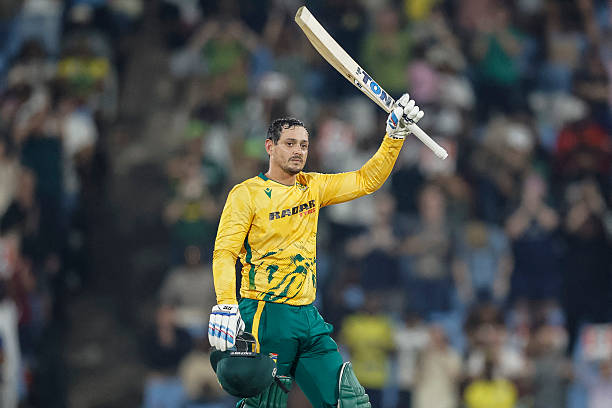
Full Name: Quinton de Kock
Date of Birth: 17 December 1992
Birthplace: Johannesburg, South Africa
Nationality: South African
Role: Wicketkeeper-Batsman
Batting Style: Left-handed
Nickname: Quinny
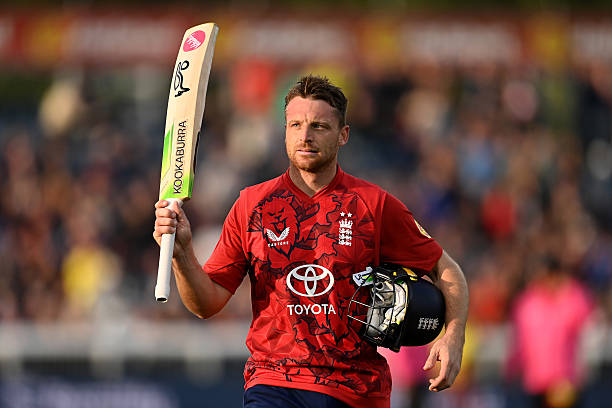
Full Name: Joseph Charles Buttler
Date of Birth: 8 September 1990
Birthplace: Taunton, England
Nationality: English
Role: Wicketkeeper-Batsman
Batting Style: Right-handed
Nickname: Jos
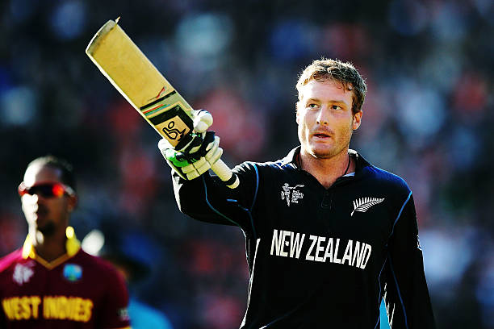
Full Name: Martin James Guptill
Date of Birth: 30 September 1986
Birthplace: Auckland, New Zealand
Nationality: New Zealander
Role: Batsman
Batting Style: Right-handed
Nickname: Gup
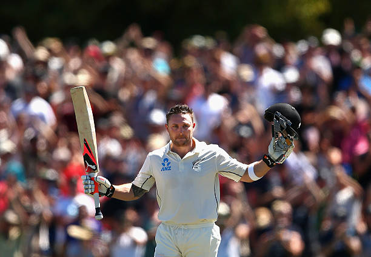
Full Name: Brendon Barrie McCullum
Date of Birth: 27 September 1981
Birthplace: Dunedin, New Zealand
Nationality: New Zealander
Role: Wicketkeeper-Batsman
Batting Style: Right-handed
Nickname: Baz
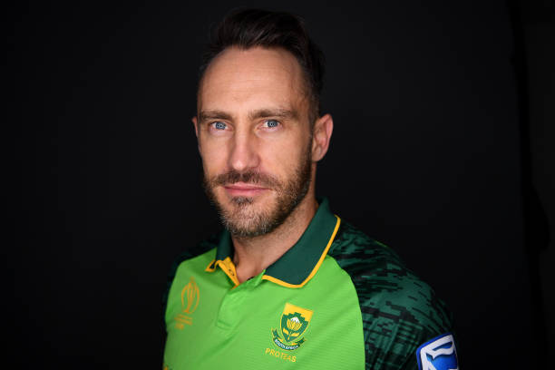
Full Name: Francois du Plessis
Date of Birth: 13 July 1984
Birthplace: Pretoria, South Africa
Nationality: South African
Role: Batsman
Batting Style: Right-handed
Nickname: Faf
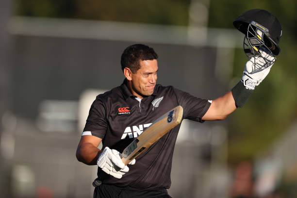
Full Name: Luteru Ross Poutoa Lote Taylor
Date of Birth: 8 March 1984
Birthplace: Lower Hutt, New Zealand
Nationality: New Zealander
Role: Batsman
Batting Style: Right-handed
Nickname: Rosco
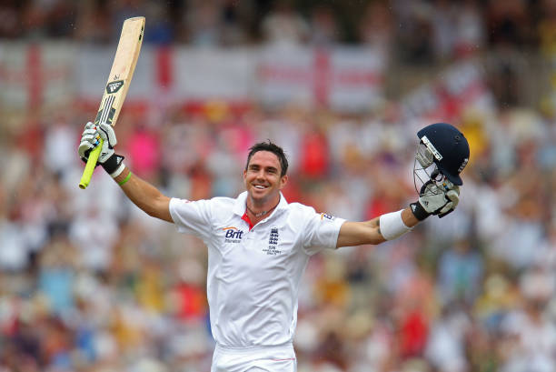
Full Name: Kevin Peter Pietersen
Date of Birth: 27 June 1980
Birthplace: Pietermaritzburg, South Africa
Nationality: English
Role: Batsman
Batting Style: Right-handed
Nickname: KP
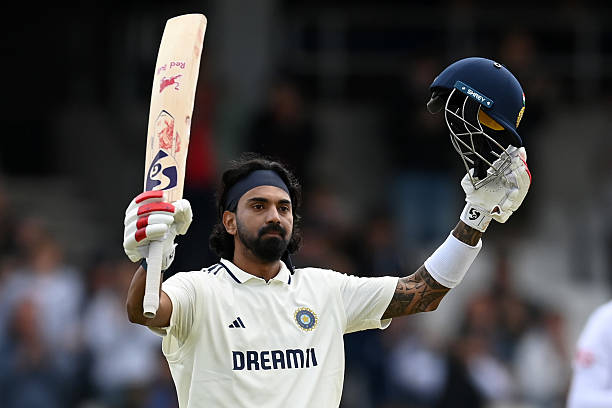
Full Name: Kannur Lokesh Rahul
Date of Birth: 18 April 1992
Birthplace: Bengaluru, India
Nationality: Indian
Role: Wicketkeeper-Batsman
Batting Style: Right-handed
Nickname: KL
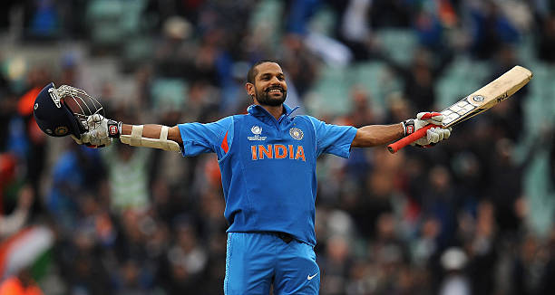
Full Name: Shikhar Dhawan
Date of Birth: 5 December 1985
Birthplace: Delhi, India
Nationality: Indian
Role: Batsman
Batting Style: Left-handed
Nickname: Gabbar
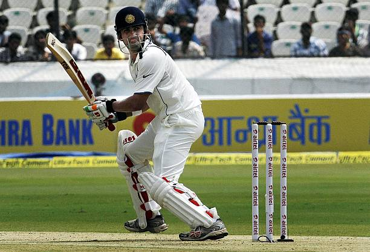
Full Name: Gautam Gambhir
Date of Birth: 14 October 1981
Birthplace: Delhi, India
Nationality: Indian
Role: Batsman
Batting Style: Left-handed
Nickname: Gauti
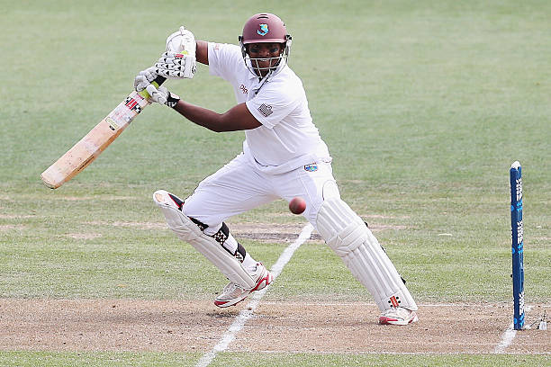
Full Name: Shivnarine Chanderpaul
Date of Birth: 16 August 1974
Birthplace: Unity Village, Guyana
Nationality: West Indian
Role: Batsman
Batting Style: Left-handed
Nickname: Tiger
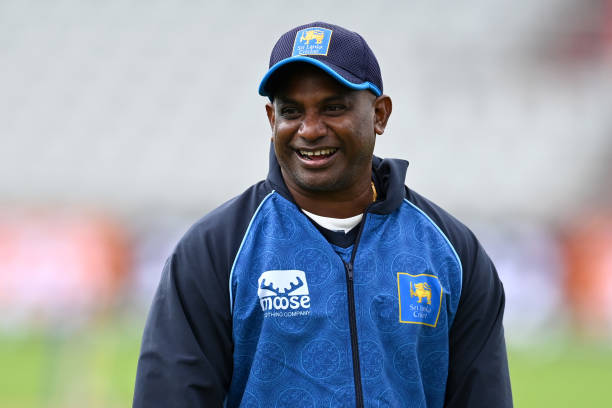
Full Name: Sanath Teran Jayasuriya
Date of Birth: 30 June 1969
Birthplace: Matara, Sri Lanka
Nationality: Sri Lankan
Role: All-rounder
Batting Style: Left-handed
Nickname: Master Blaster
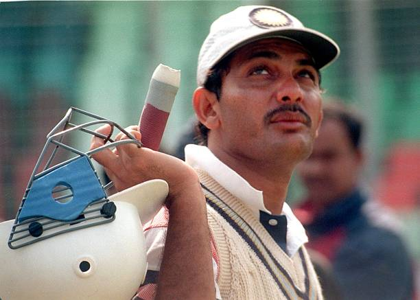
Full Name: Mohammad Azharuddin
Date of Birth: 8 February 1963
Birthplace: Hyderabad, India
Nationality: Indian
Role: Batsman
Batting Style: Right-handed
Nickname: Azhar
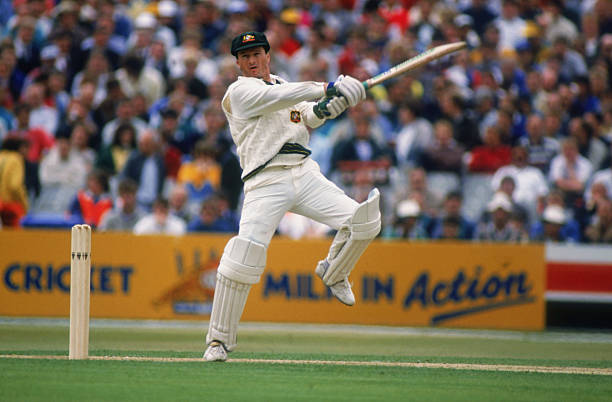
Full Name: Stephen Rodger Waugh
Date of Birth: 2 June 1965
Birthplace: Canterbury, Australia
Nationality: Australian
Role: Batsman
Batting Style: Right-handed
Nickname: Tugga
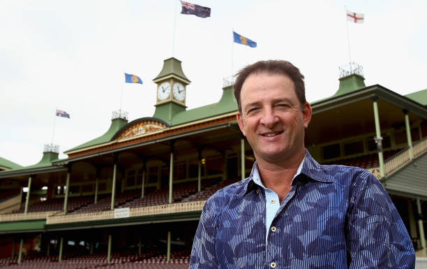
Full Name: Mark Edward Waugh
Date of Birth: 2 June 1965
Birthplace: Canterbury, Australia
Nationality: Australian
Role: Batsman
Batting Style: Right-handed
Nickname: Junior
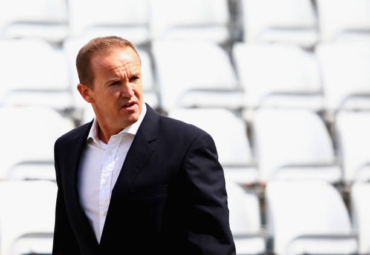
Full Name: Andrew Flower
Date of Birth: 28 April 1968
Birthplace: Cape Town, South Africa
Nationality: Zimbabwean
Role: Wicketkeeper-Batsman
Batting Style: Left-handed
Nickname: Flower